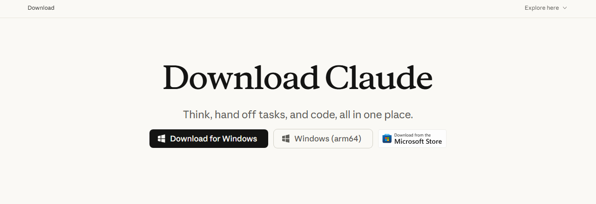
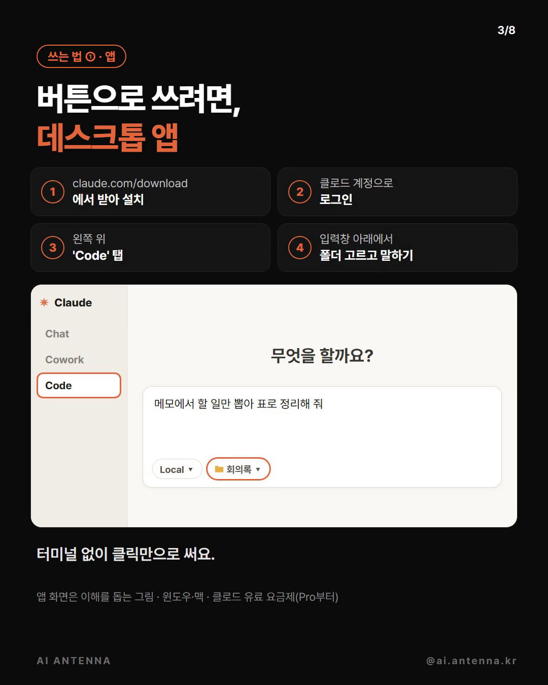
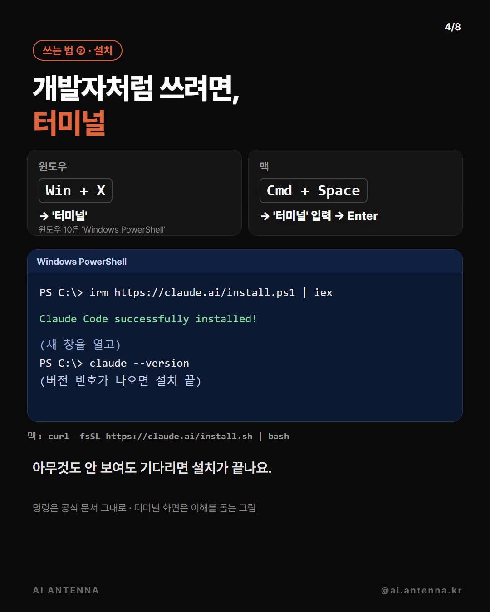

클로드 코드는 내 컴퓨터 폴더를 열어 주고 말로 시키면 파일을 직접 읽고 만들어 둬요. 버튼으로 쓰는 데스크톱 앱과 개발자처럼 쓰는 터미널, 두 방법을 공식 문서 그대로 정리했어요. 아래 '처음이라면 해 볼 만한 것들'은 연습용 폴더에서 그대로 시켜 본 것이고, '받는 것'은 그때 실제로 나온 결과예요.
claude.com/download 에서 윈도우·맥용 클로드 앱을 받아 설치하고, 클로드 계정으로 로그인하세요. 앱 안에 클로드 코드가 들어 있어서 따로 설치할 게 없어요.

왼쪽 위 'Code' 탭을 누르세요. 입력창 아래 줄에서 Local을 고르고, 옆의 폴더 칸에서 연습용 폴더를 고른 뒤 할 일을 적으면 돼요. 유료 요금제가 아니면 업그레이드 안내가 떠요.

윈도우는 Win + X를 누르고 '터미널'(윈도우 10은 'Windows PowerShell')을 고르세요. 맥은 Cmd + Space → '터미널' 입력 → Enter. 아래 '복사해서 쓰기'의 설치 한 줄을 붙여 넣고 Enter. 진행 표시 없이 받으니 기다리면 돼요. 끝나면 새 창을 열어 claude --version으로 확인하세요.

cd 다음에 연습용 폴더 경로를 적어 그 폴더로 들어가고, claude를 치세요. 처음 한 번은 로그인을 물어봐요. 브라우저가 열리면 클로드 계정으로 로그인하면 되고, 다음부터는 안 물어요. 입력창(❯)이 뜨면 할 일을 적고 Enter.
방법 ② 터미널
irm https://claude.ai/install.ps1 | iex
방법 ② 터미널
curl -fsSL https://claude.ai/install.sh | bash
받는 것: 할 일·담당·기한·비고 표. '내일'·'수요일까지' 같은 말은 회의 날짜로 계산하고, 다음 회의 일정은 할 일에서 뺐어요
메모에서 할 일만 뽑아 표로 정리해 줘
받는 것: 같은 폴더에 항목별·가맹점별·날짜별 막대그래프 페이지(html)와 합계·가장 많이 쓴 날 요약. 항목은 가맹점 이름을 보고 나눴다고 알려 줘요
지난달 카드 내역이야. 어디에 얼마 썼는지 그래프로 보여 줘
받는 것: 빠진 사람·새로 온 사람 표와 인원 변화
지난달 명단이랑 이번 달 명단 비교해서 빠진 사람, 새로 온 사람만 표시해 줘
받는 것: 세 줄 요약 + 보고서 안에서 앞뒤가 안 맞는 곳 짚어 주기
이 PDF 세 줄로 요약해 줘
받는 것: 페이지 속 표마다 시트를 나눈 엑셀 파일. 문장 뒤에 페이지 주소를 붙이세요
이 페이지 표를 엑셀로 만들어 줘 (여기에 주소)
받는 것: 이름 순서대로 합친 합본.pdf(원본은 그대로)
이 PDF들 파일 이름 순서대로 하나로 합쳐 줘
받는 것: '메일용' 폴더에 줄인 사진(8장 약 77MB → 약 10.6MB), 원본은 그대로
메일에 한 번에 붙게 사진 용량 줄여 줘
받는 것: 문서·이미지·설치파일·압축파일·음악·동영상 폴더로 옮김. 같은 파일을 두 번 받은 것도 알려 줬어요
파일을 종류별 폴더로 나눠 줘
받는 것: 크기 순 표와 정리할 만한 파일 짚어 주기. 지우지 않아요
이 폴더에서 제일 큰 파일 20개를 표로 보여 줘. 지우지는 마
받는 것: ⑧ 바로 다음에 말하면, 더블클릭하면 같은 정리를 하는 파일정리.bat(같은 이름 파일은 덮어쓰지 않음)
이 정리를 더블클릭 한 번으로 되게 만들어 줘
도움이 되셨다면
@ai.antenna.kr
에서 바로 쓰는 AI 활용법을 계속 올립니다.